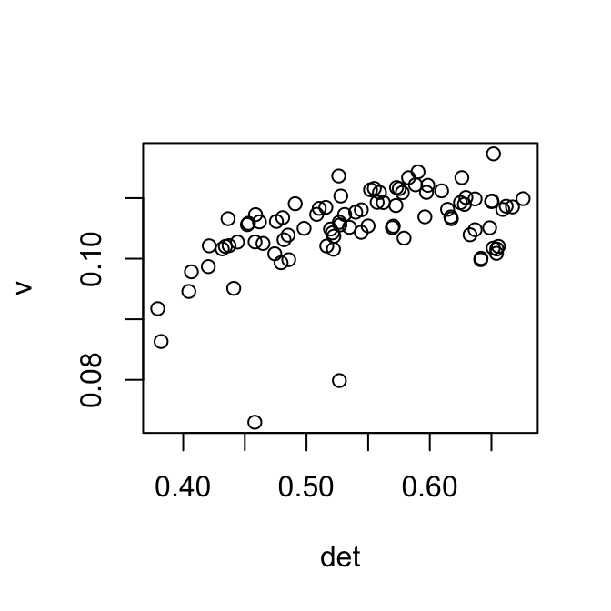
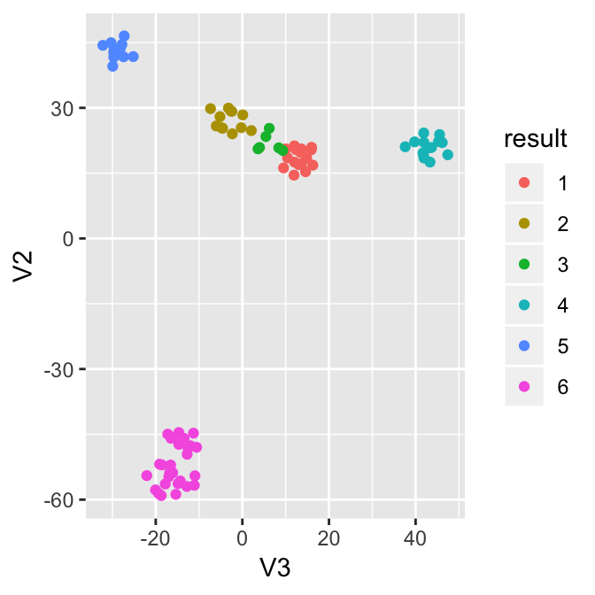
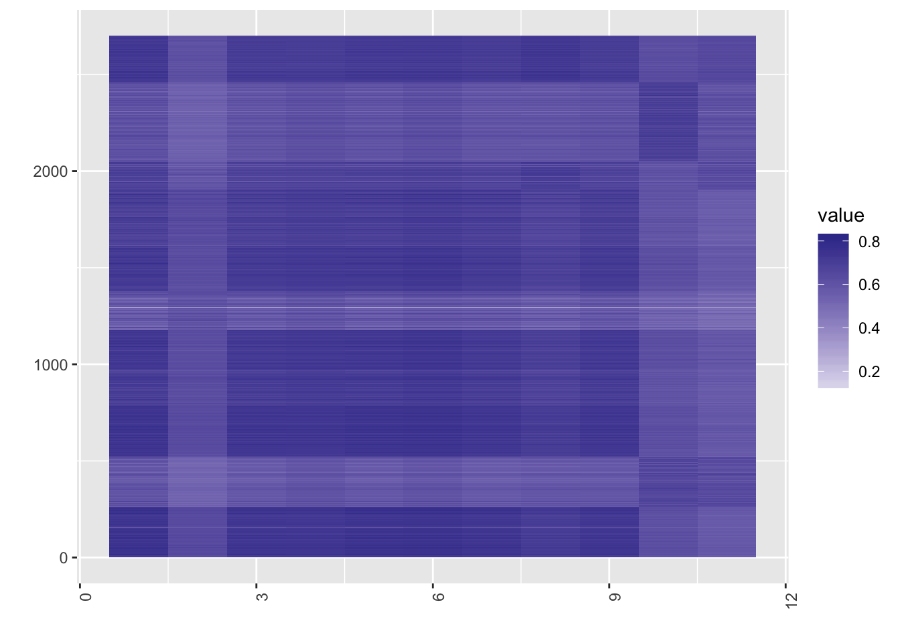
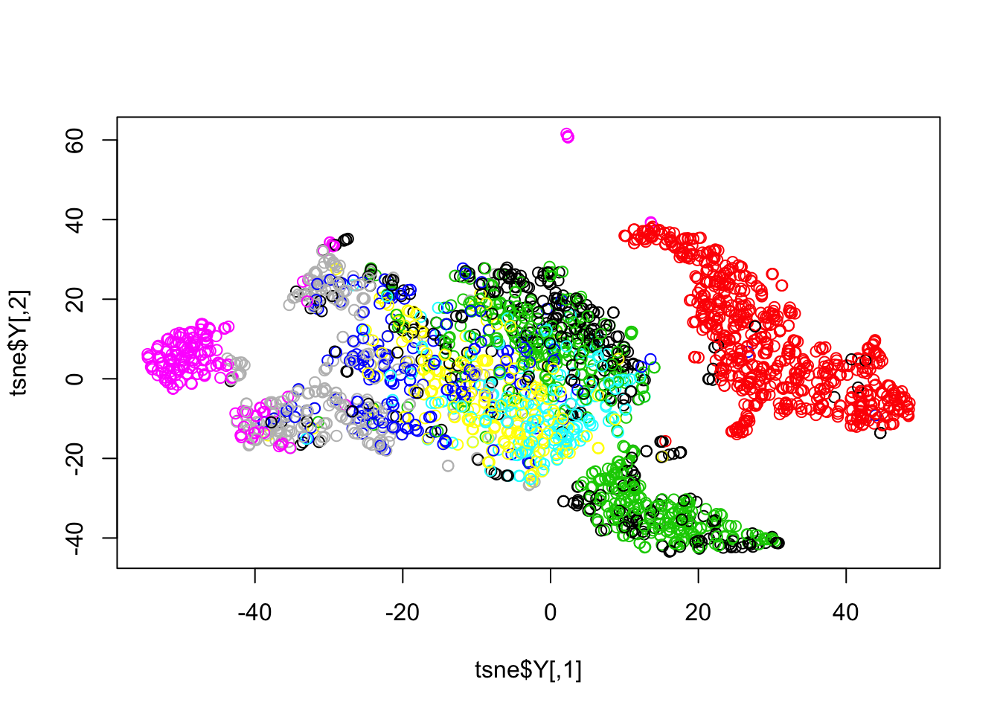
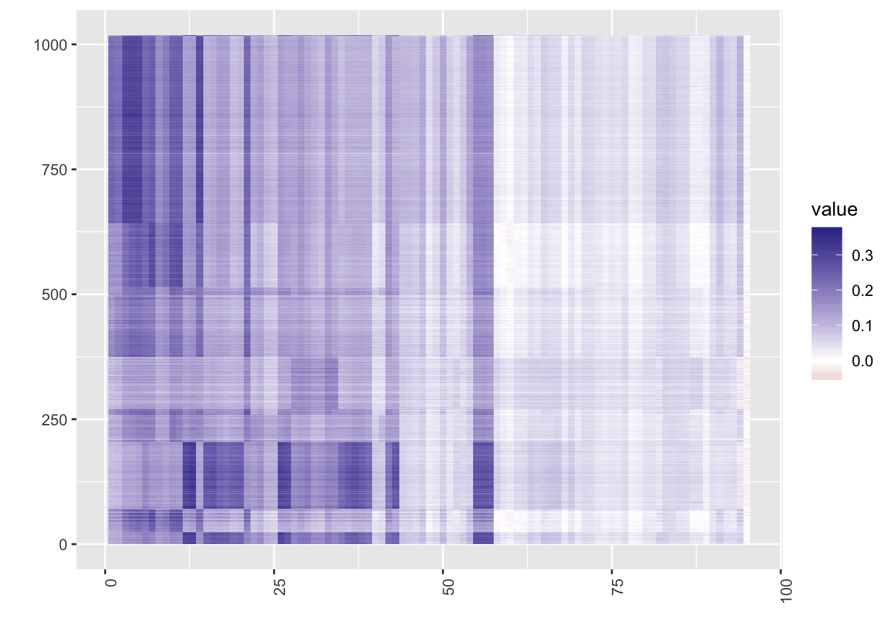

How to Use SLSL, Case by Case
Last updated: 2018-07-22
workflowr checks: (Click a bullet for more information)-
✔ R Markdown file: up-to-date
Great! Since the R Markdown file has been committed to the Git repository, you know the exact version of the code that produced these results.
-
✔ Environment: empty
Great job! The global environment was empty. Objects defined in the global environment can affect the analysis in your R Markdown file in unknown ways. For reproduciblity it’s best to always run the code in an empty environment.
-
✔ Seed:
set.seed(20180618)The command
set.seed(20180618)was run prior to running the code in the R Markdown file. Setting a seed ensures that any results that rely on randomness, e.g. subsampling or permutations, are reproducible. -
✔ Session information: recorded
Great job! Recording the operating system, R version, and package versions is critical for reproducibility.
-
Great! You are using Git for version control. Tracking code development and connecting the code version to the results is critical for reproducibility. The version displayed above was the version of the Git repository at the time these results were generated.✔ Repository version: 38c8f0f
Note that you need to be careful to ensure that all relevant files for the analysis have been committed to Git prior to generating the results (you can usewflow_publishorwflow_git_commit). workflowr only checks the R Markdown file, but you know if there are other scripts or data files that it depends on. Below is the status of the Git repository when the results were generated:
Note that any generated files, e.g. HTML, png, CSS, etc., are not included in this status report because it is ok for generated content to have uncommitted changes.Ignored files: Ignored: .Rhistory Ignored: .Rproj.user/ Ignored: R/.Rhistory Ignored: analysis/.Rhistory Ignored: analysis/figure/ Ignored: analysis/pipeline/.Rhistory Untracked files: Untracked: ..gif Untracked: .DS_Store Untracked: R/.DS_Store Untracked: R/LSLSL2.R Untracked: R/makesparsekernel.R Untracked: R/savesparsekernel.R Untracked: analysis/.DS_Store Untracked: analysis/bibliography.bib Untracked: analysis/euclidean10SLSL_kernels_tmp.txt Untracked: analysis/euclidean11SLSL_kernels_tmp.txt Untracked: analysis/euclidean12SLSL_kernels_tmp.txt Untracked: analysis/euclidean13SLSL_kernels_tmp.txt Untracked: analysis/euclidean14SLSL_kernels_tmp.txt Untracked: analysis/euclidean15SLSL_kernels_tmp.txt Untracked: analysis/euclidean16SLSL_kernels_tmp.txt Untracked: analysis/euclidean17SLSL_kernels_tmp.txt Untracked: analysis/euclidean18SLSL_kernels_tmp.txt Untracked: analysis/euclidean1SLSL_kernels_tmp.txt Untracked: analysis/euclidean2SLSL_kernels_tmp.txt Untracked: analysis/euclidean3SLSL_kernels_tmp.txt Untracked: analysis/euclidean4SLSL_kernels_tmp.txt Untracked: analysis/euclidean5SLSL_kernels_tmp.txt Untracked: analysis/euclidean6SLSL_kernels_tmp.txt Untracked: analysis/euclidean7SLSL_kernels_tmp.txt Untracked: analysis/euclidean8SLSL_kernels_tmp.txt Untracked: analysis/euclidean9SLSL_kernels_tmp.txt Untracked: analysis/pearson10SLSL_kernels_tmp.txt Untracked: analysis/pearson11SLSL_kernels_tmp.txt Untracked: analysis/pearson12SLSL_kernels_tmp.txt Untracked: analysis/pearson13SLSL_kernels_tmp.txt Untracked: analysis/pearson14SLSL_kernels_tmp.txt Untracked: analysis/pearson15SLSL_kernels_tmp.txt Untracked: analysis/pearson16SLSL_kernels_tmp.txt Untracked: analysis/pearson17SLSL_kernels_tmp.txt Untracked: analysis/pearson18SLSL_kernels_tmp.txt Untracked: analysis/pearson1SLSL_kernels_tmp.txt Untracked: analysis/pearson2SLSL_kernels_tmp.txt Untracked: analysis/pearson3SLSL_kernels_tmp.txt Untracked: analysis/pearson4SLSL_kernels_tmp.txt Untracked: analysis/pearson5SLSL_kernels_tmp.txt Untracked: analysis/pearson6SLSL_kernels_tmp.txt Untracked: analysis/pearson7SLSL_kernels_tmp.txt Untracked: analysis/pearson8SLSL_kernels_tmp.txt Untracked: analysis/pearson9SLSL_kernels_tmp.txt Untracked: analysis/pipeline/large_sets.pdf Untracked: analysis/pipeline/temp_ari.txt Untracked: analysis/pipeline/temp_time.txt Untracked: analysis/spearman10SLSL_kernels_tmp.txt Untracked: analysis/spearman11SLSL_kernels_tmp.txt Untracked: analysis/spearman12SLSL_kernels_tmp.txt Untracked: analysis/spearman13SLSL_kernels_tmp.txt Untracked: analysis/spearman14SLSL_kernels_tmp.txt Untracked: analysis/spearman15SLSL_kernels_tmp.txt Untracked: analysis/spearman16SLSL_kernels_tmp.txt Untracked: analysis/spearman17SLSL_kernels_tmp.txt Untracked: analysis/spearman18SLSL_kernels_tmp.txt Untracked: analysis/spearman1SLSL_kernels_tmp.txt Untracked: analysis/spearman2SLSL_kernels_tmp.txt Untracked: analysis/spearman3SLSL_kernels_tmp.txt Untracked: analysis/spearman4SLSL_kernels_tmp.txt Untracked: analysis/spearman5SLSL_kernels_tmp.txt Untracked: analysis/spearman6SLSL_kernels_tmp.txt Untracked: analysis/spearman7SLSL_kernels_tmp.txt Untracked: analysis/spearman8SLSL_kernels_tmp.txt Untracked: analysis/spearman9SLSL_kernels_tmp.txt Untracked: analysis/tutorial_cache/ Untracked: analysis/writeup/cite.bib Untracked: analysis/writeup/cite.log Untracked: analysis/writeup/paper.aux Untracked: analysis/writeup/paper.bbl Untracked: analysis/writeup/paper.blg Untracked: analysis/writeup/paper.log Untracked: analysis/writeup/paper.out Untracked: analysis/writeup/paper.synctex.gz Untracked: analysis/writeup/paper.tex Untracked: analysis/writeup/writeup.aux Untracked: analysis/writeup/writeup.bbl Untracked: analysis/writeup/writeup.blg Untracked: analysis/writeup/writeup.dvi Untracked: analysis/writeup/writeup.log Untracked: analysis/writeup/writeup.out Untracked: analysis/writeup/writeup.synctex.gz Untracked: analysis/writeup/writeup.tex Untracked: analysis/writeup/writeup2.aux Untracked: analysis/writeup/writeup2.bbl Untracked: analysis/writeup/writeup2.blg Untracked: analysis/writeup/writeup2.log Untracked: analysis/writeup/writeup2.out Untracked: analysis/writeup/writeup2.pdf Untracked: analysis/writeup/writeup2.synctex.gz Untracked: analysis/writeup/writeup2.tex Untracked: analysis/writeup/writeup3.aux Untracked: analysis/writeup/writeup3.log Untracked: analysis/writeup/writeup3.out Untracked: analysis/writeup/writeup3.synctex.gz Untracked: analysis/writeup/writeup3.tex Untracked: data/unnecessary_in_building/ Unstaged changes: Deleted: R/LSLSL.R Modified: R/RcppExports.R Modified: R/SLSL2.R Modified: R/SLSL_ref.R Modified: R/network.diffusion.R Deleted: analysis/correcting_detection_rate/Buettner.Rmd Deleted: analysis/correcting_detection_rate/Buettner.pdf Deleted: analysis/correcting_detection_rate/Pollen.R Deleted: analysis/correcting_detection_rate/Pollen.Rmd Deleted: analysis/correcting_detection_rate/Pollen.pdf Deleted: analysis/correcting_detection_rate/Usoskin.Rmd Deleted: analysis/correcting_detection_rate/Usoskin.pdf Deleted: analysis/correcting_detection_rate/Usoskin_files/figure-latex/loess residuals-1.pdf Deleted: analysis/correcting_detection_rate/Usoskin_files/figure-latex/pca_plot-1.pdf Deleted: analysis/correcting_detection_rate/Usoskin_files/figure-latex/quantile_plot-1.pdf Deleted: analysis/correcting_detection_rate/Usoskin_files/figure-latex/quantile_plot_log-1.pdf Deleted: analysis/correcting_detection_rate/Usoskin_files/figure-latex/rg residuals-1.pdf Deleted: analysis/correcting_detection_rate/Zeisel.R Deleted: analysis/correcting_detection_rate/detectionrate_alldata.R Deleted: analysis/correcting_detection_rate/detectionrate_pbmc.R Deleted: analysis/correcting_detection_rate/sc.xls Modified: analysis/detection_rate_correction.Rmd Modified: analysis/pipeline/large_sets.Rmd Modified: analysis/pipeline/pbmc_pipeline.R Modified: analysis/pipeline/small_good_sets.Rmd Modified: analysis/pipeline/small_good_sets_result.txt Modified: analysis/pipeline/small_good_sets_time.txt Modified: analysis/writeup/.DS_Store Modified: analysis/writeup/paper.pdf Modified: data/.DS_Store Modified: docs/figure/.DS_Store Modified: src/RcppExports.cpp Modified: src/RcppExports.o Modified: src/SCNoisyClustering.cpp Modified: src/SCNoisyClustering.o Modified: src/SCNoisyClustering.so
Expand here to see past versions:
| File | Version | Author | Date | Message |
|---|---|---|---|---|
| html | a20c598 | tk382 | 2018-07-21 | Build site. |
| Rmd | 56bd21f | tk382 | 2018-07-21 | wflow_publish(c(“analysis/tutorial.Rmd”, “analysis/_site.yml“), republish = |
| html | 5787a2e | tk382 | 2018-07-17 | Build site. |
| Rmd | e84909d | tk382 | 2018-07-17 | wflow_publish(c(“analysis/tutorial.Rmd”, “analysis/detection_rate_correction.Rmd”, |
| html | a08d3be | tk382 | 2018-07-12 | Build site. |
| Rmd | 0a9facc | tk382 | 2018-07-12 | wflow_publish(“analysis/tutorial.Rmd”) |
| Rmd | 44d0454 | tk382 | 2018-07-12 | fix Chu data error |
| html | 44d0454 | tk382 | 2018-07-12 | fix Chu data error |
| html | aa768aa | tk382 | 2018-07-12 | Build site. |
| html | 2fb398f | tk382 | 2018-07-12 | Build site. |
| Rmd | 3cf7635 | tk382 | 2018-07-12 | wflow_publish(“analysis/tutorial.Rmd”) |
| html | 27cffd8 | tk382 | 2018-07-12 | Build site. |
| Rmd | de10fbe | tk382 | 2018-07-12 | wflow_publish(“analysis/tutorial.Rmd”) |
| html | 1b226e6 | tk382 | 2018-07-12 | Build site. |
| Rmd | 9e8c49b | tk382 | 2018-07-12 | fixed the null pointer error |
| html | 9e8c49b | tk382 | 2018-07-12 | fixed the null pointer error |
| Rmd | 2d3d0b0 | tk382 | 2018-07-12 | solved mysterious null space error (removed importing r package) |
| Rmd | f6c5b07 | tk382 | 2018-07-11 | add website |
| html | f6c5b07 | tk382 | 2018-07-11 | add website |
Load the SLSL library.
library(SCNoisyClustering)
library(data.table)
library(inline)
library(matrixStats)
library(quadprog)
library(irlba)
library(ggplot2)
library(dplyr)
library(reshape)
library(caret)
library(fossil)
library(pracma)
library(igraph)
library(Rtsne)
library(gplots)
library(broom)
library(abind)
library(stargazer)
library(scatterplot3d)
library(diceR)
library(parallel)
# set.seed(1)
# R.utils::sourceDirectory("~/Dropbox/TaeProject/VariableError/SCNoisyClustering/R/", modifiedOnly=FALSE)
# Rcpp::sourceCpp('~/Dropbox/TaeProject/VariableError/SCNoisyClustering/src/SCNoisyClustering.cpp')
heat = function(S){
ggplot(melt(S), aes(x=X1, y=X2, fill=value)) + geom_tile() +
scale_fill_gradient2() +
theme(axis.text.x = element_text(angle = 90, hjust = 1)) +
xlab("") + ylab("")
}Small, good data sets
First, prepare your data set. It should be a normalized count matrix in units such as TPM, CPM, RPKM, or FPKM. True label data is available for the sample data Yan et al. (L. Yan et al. 2013), and we will evaluate the performance at the end as an example, but the label information is not expected for most cases.
Read Data
load('../data/Yan.rda')
X = as.matrix(yan)
truelabel = as.character(ann$cell_type1)
numClust = 6
rm(ann, yan)The data should look something like this.
X[1:4,1:4] Oocyte..1.RPKM. Oocyte..2.RPKM. Oocyte..3.RPKM. Zygote..1.RPKM.
C9orf152 0.0 0.0 0.0 0.0
RPS11 1219.9 1021.1 931.6 875.4
ELMO2 7.0 12.2 9.3 52.1
CREB3L1 1.0 1.4 1.9 1.8\(X\) must be a matrix with dimension \(p \times n\) where \(p\) is the gene count and \(n\) is the cell count. Each cell is located in each column, and each gene is located in each row. The sample data has the gene names as the row names, but this is not required unless you plan to use the reference panel. The column names are also not required because the package assumes the cell names contain no information about the cell subtypes.
Parameter Set-Up
The SLSL wrapper function can be used like below. Below are the explanations of the parameters available for you to fine-tune.
First, you can specify the number of clusters. The default is “NA”, and SLSL will decide this for you based on the eigenvalues of the learned similarity matrix.
numClust = length(unique(truelabel)) #4A knn parameter \(k\) determines how many neighbors the algorithm uses to account for the local structure. The default is k = NA and algorithm will automatically assign it as max(10, number of cells / 20). This parameter is used in building the kernel matrices and in network diffusion.
k = NAThen decide if you’d like to filter the genes. For each gene, SLSL counts the number of cells that have zero count, and if the proportion of such cells is higher than filter_p1 or lower than filter_p2, such gene is removed. This does not influence the clustering result much, unless filter_p1 is too low or filter_p2 is too high, and reduces the computational burden of the algorithm. The default choice of 0.9 and 0 reasonably selects the genes that do not hold much information for clustering and remove them.
filter = TRUE #or FALSE
filter_p1 = 0.9 #any value 0 and 1, but something between 0.85 - 0.95 is recommended
filter_p2 = 0 #any value between 0 and 1, but something less than 0.1 is recommendedHicks 2017 showed that a large amount of cell-to-cell variation comes from the detection rate, or the proportion of genes that have greater than zero count. For example, first principal component of the data is often correlated with the zero counts of each cell.
Hicks explains that log-transforming the datawith pseudo-counts introduces the bias because the mean counts are no longer the same across the cells.
The first singular vector is plotted below against the detection rate. It is shown that after centering each column of the log transformed matrix removes part of the correlation between the detection rate and the first singular vector. This correction influences the Euclidean distance matrix, and therefore f
library(irlba)
v = irlba(log(X+1), 1)$v[,1]
det = 1-colSums(X==0)/nrow(X)
plot(v ~ det)
Expand here to see past versions of pca-1.png:
| Version | Author | Date |
|---|---|---|
| a08d3be | tk382 | 2018-07-12 |
| 2fb398f | tk382 | 2018-07-12 |
| 1b226e6 | tk382 | 2018-07-12 |
newX = scale(log(X+1), scale=F)
newv = irlba(newX, 1)$v[,1]
plot(newv~det)
Expand here to see past versions of pca-2.png:
| Version | Author | Date |
|---|---|---|
| a08d3be | tk382 | 2018-07-12 |
| 2fb398f | tk382 | 2018-07-12 |
| 1b226e6 | tk382 | 2018-07-12 |
One way to correct this is to regress out the zero counts of each cell. However, as shown above, some data sets have non-linear relationship with the zero counts, and sometimes it’s better to transform the data accordingly.
When correct_detection_rate parameter is set to TRUE, the residuals after regressing out the zero counts are used instead of the log of counts. The default is FALSE, and we expect the users to inspect the data like above before setting this to TRUE.
correct_detection_rate = TRUE #default : FALSENext argument is kernel_type. This determines the method to meaure the cell to cell distance. SLSL algorithm combines information from many distance matrices computed from different kernel parameters, where the default setting uses 18 different combinations of the kernel parameters. When kernel_type is specified as one of “spearman”, “pearson”, or “euclidean”, SLSL will learn similarity matrix based on those 18 kernel matrices using the specified distance masure. When kernel_type is specified as “combined” (default setting), SLSL will compute three distance matrices using all three distance measures and \(18 \times 3\) kernel matrices to learn the similarity matrix. In other words, kernel_type = “combined” requires more memory and computational power, but it will reach higher accuracy by accounting for complex cell to cell variability.
kernel_type = "combined" #or spearman or pearson or euclideanThe user can also specify the kernel parameters. Denoting the distance from cell \(i\) and cell \(j\) as \(D_{ij}\), \(K_{ij}\) given kernel parameters \(k\) and \(\sigma\) is \[K_{ij} = \frac{1}{\sqrt{2\pi}\epsilon_{ij}} exp \left(-\frac{D_{ij}}{2\epsilon^2_{ij}}\right)\] where \[\epsilon_{ij} = \frac{(\mu_i + \mu_j)\sigma}{2}\]
\[\mu_{i} = \frac{\sum_{j \in KNN(i, k)} \|x_i - x_j\|^2_2}{k}\] \(KNN(x_i, k)\) is the \(k\) nearest neighbors of cell \(i\), and \(x_i\) is the gene expression level profile of cell \(i\). Therefore, the kernel parameters \(k\) determines how many neighbors of each cell to use to account for the local structure, and another parameter \(\sigma\) determines how to scale the distance to account for the non-linearity.
klist = seq(15, 25, by=5)
sigmalist = seq(1, 2, by=0.2)\(\tau\) and \(\gamma\) are the penalty parameters for similarity learning. SLSL combines multiple kernel matrices by giving each of them different weights to reach maximum sparsity (\(\tau\)). Some past works showed that imposing penalty \(gamma\) on the Frobenius norm of the learned similarity matrix. This prevents the similarity matrix from being too close to the identity matrix (assigning each cell to a separate cluster). However, empirically, removing this penalty and setting \(\gamma = 0\) performed well. \(\tau\) is set to 5 as a default, and as long as it’s not too small (we recommend \(\tau > 1\)), the algorithm works well.
tau = 5
gamma = 0Lastly, verbose should be set to TRUE if the user would like to see the progress of the algorithm. measuretime should be set to TRUE if the user would like to see how long each step of the algorithm takes. The default settings are FALSE for both parameters, but here, we set them TRUE to see what they do.
verbose = TRUE
measuretime = TRUERun the Function
Using the prespecified parameters above, run the SLSL function.
out = SLSL2(X = as.matrix(X),
numClust = numClust,
k = k,
filter = filter,
filter_p1 = filter_p1,
filter_p2 = filter_p2,
correct_detection_rate = correct_detection_rate,
kernel_type = kernel_type,
klist = klist,
sigmalist = sigmalist,
tau = tau,
gamma = gamma,
verbose = verbose,
measuretime = measuretime
)[1] "constructing kernel.."
[1] "optimizing.."
[1] "network diffusion.."
[1] "dimension reduction.."
gene filter & numClust 0.39 seconds
constructing kernel 2.5 seconds
get S 0.11 seconds
network diffusion 0.02 seconds
tsne 0.05 secondsOr, you can also use default parameters, and this will work as well.
out = SLSL2(X)Analyze the Result
First, let’s take a look at the heatmap of the similarity matrix. Note that the cells have been arranged according to the true groupings. The result seems pretty good, except the two cells around 50 that have clearly been misclassified.
ind = sort(out$result, index.return=TRUE)$ix
heat(out$S[ind, ind])Expand here to see past versions of similarity_matrix-1.png:
| Version | Author | Date |
|---|---|---|
| a20c598 | tk382 | 2018-07-21 |
| 5787a2e | tk382 | 2018-07-17 |
| a08d3be | tk382 | 2018-07-12 |
| 2fb398f | tk382 | 2018-07-12 |
| 27cffd8 | tk382 | 2018-07-12 |
Below is the comparison with the true label. This is not applicable when true labels are not available.
adj.rand.index(out$result, as.numeric(as.factor(truelabel)))[1] 0.8954618Now let’s visualize the result through the dimension reduction result. The true label information allows us to analyze the errors from the algorithm. For example, the zygotes and 2-cells were clustered into one group, while there are two outliers in the 16 cells that are close to 8 cells.
tsne = out$tsne
df = as.data.frame(tsne)
df$truelabel = as.factor(truelabel)
df$result = as.factor(out$result)
#ggplot(df, aes(x=V3, y=V2, col=truelabel)) + geom_point()
ggplot(df, aes(x=V3, y=V2, col=result)) + geom_point()
Expand here to see past versions of dimred-1.png:
| Version | Author | Date |
|---|---|---|
| a20c598 | tk382 | 2018-07-21 |
| 5787a2e | tk382 | 2018-07-17 |
| a08d3be | tk382 | 2018-07-12 |
| 2fb398f | tk382 | 2018-07-12 |
| 1b226e6 | tk382 | 2018-07-12 |
#scatterplot3d(x=df$V2, y=df$V3, z=df$V4, color = as.numeric(as.factor(truelabel)))
scatterplot3d(x=df$V2, y=df$V3, z=df$V4, color = df$result)
Using Reference Panel
The SLSL function also has a hidden argument “ref”. This allows the users to utilize the reference panel data sets (H. Li et al. 2017). Two panels are available: cell types and tissue types. One can simply add this parameter in SLSL function.
Demonstration1 : 10X data of PBMC cells
To demonstrate the use of the reference panel, we use the 10X data of PBMC cells from [Zheng2017massively]. They provide the reference set of 11 type of pure cell type populations, and we use the file for demonstration. Due to the size, these data sets are not included in the package, and they can be found here: https://support.10xgenomics.com/single-cell-gene-expression/datasets and https://github.com/10XGenomics/single-cell-3prime-paper.
X = readMM('../data/unnecessary_in_building/pbmc3k/matrix.mtx')
X = as.matrix(X)
genes = read.table('../data/unnecessary_in_building/pbmc3k/genes.tsv')
rownames(X) = genes$V2
ref_file = readRDS('../data/unnecessary_in_building/pbmc3k/all_pure_select_11types.rds')
ref = t(ref_file$pure_avg)
rownames(ref) = genes$V2[ref_file$pure_use_genes]
colnames(ref) = ref_file$pure_id
ref = scale(ref)The two most important arguments are the data matrix “X” and reference panel “ref”. We assume X is count matrix, while reference panel is already log transformed and normalized. Another parameter the user can choose is “knn”. Empirical results showed that, after taking the projection of the data matrix onto the reference panel, removing low correlations improve the signal strength.
Note that 10X data has very low detection rate. (number of genes detected as greater than 0 for each cell). The histogram below shows that only around 2% of the genes are detected for most cells.
hist(colSums(X!=0) / nrow(X), breaks=50,
xlab = 'detection rate per cell', ylab = '')Expand here to see past versions of 10Xdet-1.png:
| Version | Author | Date |
|---|---|---|
| 5787a2e | tk382 | 2018-07-17 |
This data is from 11 different PBMC cell types, and yet the dimension reduction doesn’t show any particular patterns.
tsne = Rtsne(t(log(X+1)), perplexity=10)When we use the reference panel, the clustering becomes much easier.
A couple things to note. Note that the projection matrix will be very low rank. With this particular data set, there are 11 reference cells with 2,700 cells to cluster, so the similarity matrix will be a 2,700 2700 matrix with rank 11. That means, even when the projection matrix is filled with completely random numbers, the similarity matrix will have a certain structure with rank less than or equal to 11. Therefore, the result may be over-confident about the data structure. Another thing to note is that, since there are only few features for each cell in projection matrix, when we use Spearman correlation to measure similarity, there will be cells with correlation 1, causing numerical instability. Therefore, we strongly recommend that users use Euclidean distance to build a kernel.
pbmc_ref = SLSL_ref(X = as.matrix(X),
filter = TRUE,
filter_p1 = 0.9,
filter_p2 = 0.1,
kernel_type = "euclidean",
numClust = 11,
ref = ref,
verbose=T)[1] "data cleaning.."
[1] "computing projection.."
[1] "ref with smaller version.."
[1] "constructing kernel.."
[1] "optimizing.."
[1] "network diffusion.."
[1] "dimension reduction.."Sort the cells and visualize the projection matrix.
heat(pbmc_ref$projection[,sort(pbmc_ref$result$result, index.return=T)$ix])
Expand here to see past versions of pbmc_analyze-1.png:
| Version | Author | Date |
|---|---|---|
| a20c598 | tk382 | 2018-07-21 |
| 5787a2e | tk382 | 2018-07-17 |
plot(tsne$Y, col = pbmc_ref$result$result)
Expand here to see past versions of pbmc_analyze-2.png:
| Version | Author | Date |
|---|---|---|
| a20c598 | tk382 | 2018-07-21 |
| 5787a2e | tk382 | 2018-07-17 |
We also provide two reference sets of human cell types and tissue types. Below is a demonstration of cell type panel.
sysdata = SCNoisyClustering::reference_panel
ref = reference_panel$cell
load('../data/unnecessary_in_building/7_Chu_celltype.RData')
X = Chu_celltype$X
chu_ref = SLSL_ref(X = as.matrix(X),
ref = ref,
numClust = 7,
verbose = T)[1] "data cleaning.."
[1] "computing projection.."
[1] "ref with smaller version.."
[1] "constructing kernel.."
[1] "optimizing.."
[1] "network diffusion.."
[1] "dimension reduction.."heat(chu_ref$projection[,sort(chu_ref$result$result, index.return=T)$ix])
Expand here to see past versions of visualize_chu_ref_projection-1.png:
| Version | Author | Date |
|---|---|---|
| a20c598 | tk382 | 2018-07-21 |
One can observe that in the cell atlas panel, ESC (embryonic stem cells) tend to show high correlation, which is as expected. Now, take a look at the heatmap of the similarity matrix of the projection matrix, and evaluate the clustering result.
Since using reference panels often throws away a lot of information, users should be careful when to use panels and which panel to use. The data sets should be from human cells, and they should have enough cellular heterogeneity. For example, Yan data are from different stages of human embryonic cells, and once projected on to the reference panels, all the cells belonged to one type : oocytes. The Chu data above also shows a much better performance when clustered without the reference panel.
Large Sets (cells > 3000)
There is a separate function for data sets that have more than 3,000 cells : LSLSL(Large Similarity Learning with Scaled Lasso).
The input data matrix is the same as regular SLSL: a count matrix with cells in columns and genes in rows. LSLSL assumes that the number of columns exceed 1000. We use Zeisel data (Zeisel et al. 2015)
Read Data
load('../data/unnecessary_in_building/Zeisel.Rdata')
X = Zeisel$X
truelabel = Zeisel$labelNote that Zeisel is a Drop-seq data, and coverage is very low. The histogram of the detection rate is below.
Parameter Set-Up
detection_rate = 1-colSums(X==0)/nrow(X)
hist(detection_rate, breaks = 20)
Expand here to see past versions of zeisel_coverage-1.png:
| Version | Author | Date |
|---|---|---|
| a08d3be | tk382 | 2018-07-12 |
| 2fb398f | tk382 | 2018-07-12 |
Since we have the true label data, we will use the true number of clusters,
numClust = length(unique(truelabel)) #default is NAFor the kernel_type, we will use “combined” as before.
kernel_type = "combined" #one of "spearman", "pearson", or "euclidean"LSLSL uses “parallel” package in CRAN for parallel computing. Users can specify the number of cores to use. The default is NA, and LSLSL will detect the number of cores of your laptop and use everything except 1. Here, we specify it as 2.
core = 3 #default is NAThe shuffle argument decides if LSLSL should shuffle the order of the cells. LSLSL divides the cells into groups of approximately the same size, and it works the best if each group contains all subtypes of the cells. Unless the user carefully designed the ordering of the cells so that they are well mixed, we recommend to set shuffle as TRUE.
shuffle = TRUE #default is TRUENow run the algorithm with different methods.
res = LSLSL2(X = X,
numClust = numClust,
kernel_type = kernel_type,
core = core,
shuffle = shuffle,
cluster_method = "CSPA",
verbose = TRUE)[1] "building pearson correlation matrix.."
[1] " now saving following kernels"
[1] " pearson1SLSL_kernels_tmp.txt"
[1] " pearson2SLSL_kernels_tmp.txt"
[1] " pearson3SLSL_kernels_tmp.txt"
[1] " pearson4SLSL_kernels_tmp.txt"
[1] " pearson5SLSL_kernels_tmp.txt"
[1] " pearson6SLSL_kernels_tmp.txt"
[1] " pearson7SLSL_kernels_tmp.txt"
[1] " pearson8SLSL_kernels_tmp.txt"
[1] " pearson9SLSL_kernels_tmp.txt"
[1] " pearson10SLSL_kernels_tmp.txt"
[1] " pearson11SLSL_kernels_tmp.txt"
[1] " pearson12SLSL_kernels_tmp.txt"
[1] " pearson13SLSL_kernels_tmp.txt"
[1] " pearson14SLSL_kernels_tmp.txt"
[1] " pearson15SLSL_kernels_tmp.txt"
[1] " pearson16SLSL_kernels_tmp.txt"
[1] " pearson17SLSL_kernels_tmp.txt"
[1] " pearson18SLSL_kernels_tmp.txt"
[1] "building euclidean distance matrix.."
[1] " now saving following kernels"
[1] " euclidean1SLSL_kernels_tmp.txt"
[1] " euclidean2SLSL_kernels_tmp.txt"
[1] " euclidean3SLSL_kernels_tmp.txt"
[1] " euclidean4SLSL_kernels_tmp.txt"
[1] " euclidean5SLSL_kernels_tmp.txt"
[1] " euclidean6SLSL_kernels_tmp.txt"
[1] " euclidean7SLSL_kernels_tmp.txt"
[1] " euclidean8SLSL_kernels_tmp.txt"
[1] " euclidean9SLSL_kernels_tmp.txt"
[1] " euclidean10SLSL_kernels_tmp.txt"
[1] " euclidean11SLSL_kernels_tmp.txt"
[1] " euclidean12SLSL_kernels_tmp.txt"
[1] " euclidean13SLSL_kernels_tmp.txt"
[1] " euclidean14SLSL_kernels_tmp.txt"
[1] " euclidean15SLSL_kernels_tmp.txt"
[1] " euclidean16SLSL_kernels_tmp.txt"
[1] " euclidean17SLSL_kernels_tmp.txt"
[1] " euclidean18SLSL_kernels_tmp.txt"
[1] "building euclidean distance matrix.."
[1] " now saving following kernels"
[1] " spearman1SLSL_kernels_tmp.txt"
[1] " spearman2SLSL_kernels_tmp.txt"
[1] " spearman3SLSL_kernels_tmp.txt"
[1] " spearman4SLSL_kernels_tmp.txt"
[1] " spearman5SLSL_kernels_tmp.txt"
[1] " spearman6SLSL_kernels_tmp.txt"
[1] " spearman7SLSL_kernels_tmp.txt"
[1] " spearman8SLSL_kernels_tmp.txt"
[1] " spearman9SLSL_kernels_tmp.txt"
[1] " spearman10SLSL_kernels_tmp.txt"
[1] " spearman11SLSL_kernels_tmp.txt"
[1] " spearman12SLSL_kernels_tmp.txt"
[1] " spearman13SLSL_kernels_tmp.txt"
[1] " spearman14SLSL_kernels_tmp.txt"
[1] " spearman15SLSL_kernels_tmp.txt"
[1] " spearman16SLSL_kernels_tmp.txt"
[1] " spearman17SLSL_kernels_tmp.txt"
[1] " spearman18SLSL_kernels_tmp.txt"
[1] "working on the following subsets:"
[1] "consensus clustering: CSPA.."Analyze the Result
adj.rand.index(truelabel, res$result)[1] 0.640202Let’s try all the available consensus clustering methods in LSLSL function. The result is stored, so there is no need to run it again. The following chunk arranges the data set into a 4 dimensional array for the specification of package “diceR.” (Chiu and Talhouk 2018)
# construct an array called "out" for specification in diceR package.
final = res$array
out = array(0, dim=c(nrow(final), ncol(final), 1, 1))
out[,,1,1] = final
k = length(unique(truelabel))
dimnames(out)[[1]] = paste0('R',1:nrow(final)) #random row names
dimnames(out)[[2]] = paste0('C',1:ncol(final)) #random column names
dimnames(out)[[3]] = paste0("k")
dimnames(out)[[4]] = as.character(k) #This must be the number of clustersYou must impute the array in order to use other consensus clustering methods. The “impute_missing” requires the raw data matrix (make sure it is transposed), and here we use the filtered X. This is appropriate especially because this is a Drop-seq data where most genes hold little information. The three methods are “k_modes”, “majority_voting”, and “LCE”. For the guidance of which method to use, refer to (Chiu and Talhouk 2018).
X = log(genefilter(X)+1)
E = impute_missing(out, t(X), 9)
kmodes = k_modes(E, 9)
majvote = majority_voting(E, 9)
lce = LCE(E, 9)
adj.rand.index(kmodes, truelabel)
adj.rand.index(majvote, truelabel)
adj.rand.index(lce, truelabel) Chiu, Derek, and Aline Talhouk. 2018. DiceR: Diverse Cluster Ensemble in R. https://CRAN.R-project.org/package=diceR.
Li, Huipeng, Elise T Courtois, Debarka Sengupta, Yuliana Tan, Kok Hao Chen, Jolene Jie Lin Goh, Say Li Kong, et al. 2017. “Reference Component Analysis of Single-Cell Transcriptomes Elucidates Cellular Heterogeneity in Human Colorectal Tumors.” Nature Genetics 49 (5). Nature Publishing Group: 708.
Yan, Liying, Mingyu Yang, Hongshan Guo, Lu Yang, Jun Wu, Rong Li, Ping Liu, et al. 2013. “Single-Cell Rna-Seq Profiling of Human Preimplantation Embryos and Embryonic Stem Cells.” Nature Structural and Molecular Biology 20 (9). Nature Publishing Group: 1131.
Zeisel, Amit, Ana B Muñoz-Manchado, Simone Codeluppi, Peter Lönnerberg, Gioele La Manno, Anna Juréus, Sueli Marques, et al. 2015. “Cell Types in the Mouse Cortex and Hippocampus Revealed by Single-Cell Rna-Seq.” Science 347 (6226). American Association for the Advancement of Science: 1138–42.
Session information
sessionInfo()R version 3.5.1 (2018-07-02)
Platform: x86_64-apple-darwin15.6.0 (64-bit)
Running under: macOS Sierra 10.12.5
Matrix products: default
BLAS: /Library/Frameworks/R.framework/Versions/3.5/Resources/lib/libRblas.0.dylib
LAPACK: /Library/Frameworks/R.framework/Versions/3.5/Resources/lib/libRlapack.dylib
locale:
[1] en_US.UTF-8/en_US.UTF-8/en_US.UTF-8/C/en_US.UTF-8/en_US.UTF-8
attached base packages:
[1] parallel stats graphics grDevices utils datasets methods
[8] base
other attached packages:
[1] diceR_0.5.1 scatterplot3d_0.3-41
[3] stargazer_5.2.2 abind_1.4-5
[5] broom_0.4.5 gplots_3.0.1
[7] Rtsne_0.13 igraph_1.2.1
[9] pracma_2.1.4 fossil_0.3.7
[11] shapefiles_0.7 foreign_0.8-70
[13] maps_3.3.0 sp_1.2-7
[15] caret_6.0-80 lattice_0.20-35
[17] reshape_0.8.7 dplyr_0.7.6
[19] ggplot2_3.0.0 irlba_2.3.2
[21] Matrix_1.2-14 quadprog_1.5-5
[23] matrixStats_0.53.1 inline_0.3.15
[25] data.table_1.10.4-3 SCNoisyClustering_0.1.0
loaded via a namespace (and not attached):
[1] nlme_3.1-137 bitops_1.0-6 lubridate_1.7.4
[4] dimRed_0.1.0 rprojroot_1.3-2 tools_3.5.1
[7] backports_1.1.2 R6_2.2.2 KernSmooth_2.23-15
[10] rpart_4.1-13 lazyeval_0.2.1 colorspace_1.3-2
[13] nnet_7.3-12 withr_2.1.2 tidyselect_0.2.4
[16] mnormt_1.5-5 compiler_3.5.1 git2r_0.21.0
[19] labeling_0.3 caTools_1.17.1 scales_0.5.0
[22] sfsmisc_1.1-2 DEoptimR_1.0-8 psych_1.8.3.3
[25] robustbase_0.93-0 stringr_1.3.0 digest_0.6.15
[28] rmarkdown_1.9 R.utils_2.6.0 pkgconfig_2.0.1
[31] htmltools_0.3.6 rlang_0.2.0 ddalpha_1.3.2
[34] bindr_0.1.1 mclust_5.4 gtools_3.5.0
[37] ModelMetrics_1.1.0 R.oo_1.22.0 magrittr_1.5
[40] Rcpp_0.12.16 munsell_0.4.3 R.methodsS3_1.7.1
[43] stringi_1.1.7 whisker_0.3-2 yaml_2.1.19
[46] MASS_7.3-50 plyr_1.8.4 recipes_0.1.2
[49] grid_3.5.1 gdata_2.18.0 splines_3.5.1
[52] knitr_1.20 pillar_1.2.2 reshape2_1.4.3
[55] codetools_0.2-15 stats4_3.5.1 CVST_0.2-1
[58] magic_1.5-8 glue_1.2.0 evaluate_0.10.1
[61] foreach_1.4.4 gtable_0.2.0 purrr_0.2.4
[64] tidyr_0.8.0 kernlab_0.9-25 assertthat_0.2.0
[67] DRR_0.0.3 gower_0.1.2 prodlim_2018.04.18
[70] class_7.3-14 survival_2.42-3 geometry_0.3-6
[73] timeDate_3043.102 RcppRoll_0.2.2 tibble_1.4.2
[76] iterators_1.0.9 workflowr_1.1.1 bindrcpp_0.2.2
[79] lava_1.6.1 ipred_0.9-6 This reproducible R Markdown analysis was created with workflowr 1.1.1